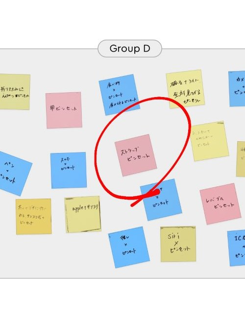

政策課題決定までのプロセス

グループでの話し合いでストラップピンセットというアイデアが出てきて私はピンセットを使う際、どこにあるのかわからなく、
毎回探すことになるため、同じ場所に毎回つければピンセットをなくさないで済む思ったのと外出した際にも使えると思いストラップになるピンセットを作ろうと決めた。

ストラップにするならポップなのがいいと思い、うさぎにした。当初はウサギの耳でつかむ目るようにするつもりであったが、
形的にきびしいつかむのが厳しいとなり、カチューシャのようなイメージで顔の輪郭でつかめるようなデザインに決まった。
ウサギのピンセット【試作品１】

スケッチしたものをもとに耳に穴をあけ、作成したところモノをつかめないというピンセットとして機能しないという問題が出た。考えられる原因として挙げられるのは・・・
- 厚すぎた
- つかむ部分が短すぎた
- つかむ部分が太すぎた
ウサギのピンセット【試作品２】

先ほどの原因となる個所を改善し、作ってみたところ、前よりはつかみやすかったが、それでも固く、結局、折れてしまった。

友達のアドバイスによって、顔の輪郭だけをあけるのではなく、耳の輪郭まであけるようにしてみた。そうすることで、柔軟性が生まれ、ものをつかむことができるようになるのでは？